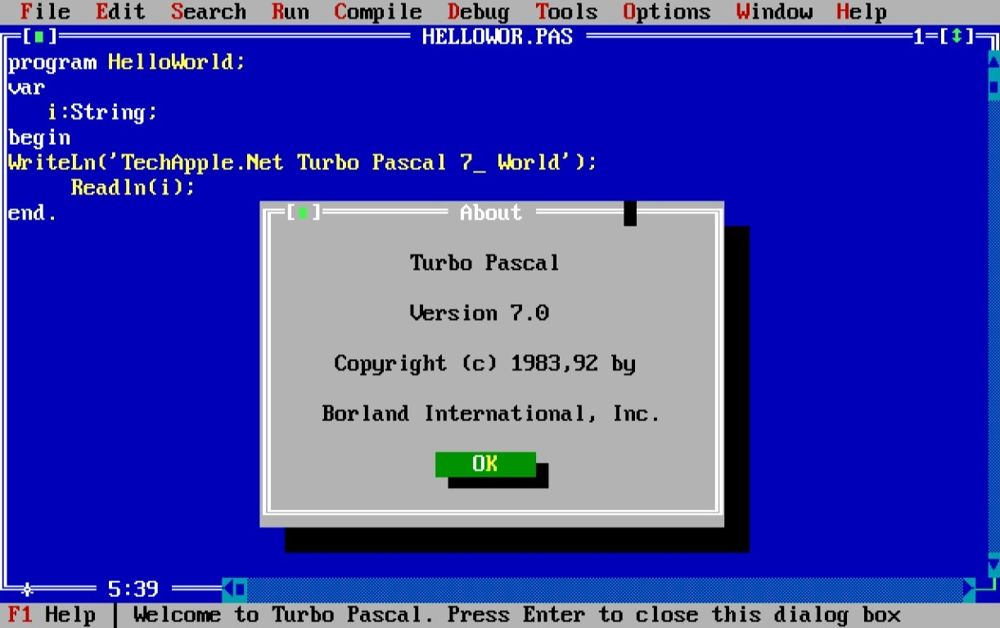
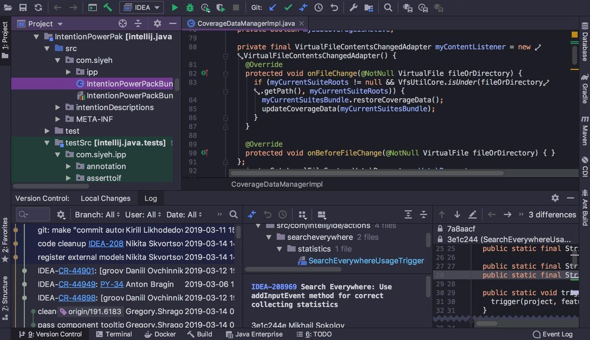

Інтегроване середовище розробки (IDE)
Теорія
Написання лише однієї програми передбачає цілий ряд завдань: ви пишете код, знаходите та виправляєте помилки, які неминуче виникають, потім код потрібно скомпілювати, запустити та задокументувати. Уявіть, що все це потрібно робити знову і знову (ну, це просто чудово). За допомогою таких невеликих програм, як Hello World, ви можете виконувати ці завдання за допомогою простого текстового редактора для написання вихідного коду та набору інструментів для перекладу та запуску програм. Деякі текстові редактори можуть навіть виділяти синтаксис, що спрощує процес написання, але цього може бути недостатньо для роботи над чимось більшим і складнішим.
Якщо ви професійний програміст-розробник, вам потрібен спеціальний інструмент для навігації між вашими багатофайловими програмами, їх модифікації, компіляції, запуску та налагодження, відображення синтаксичних помилок тощо. Інтегроване середовище розробки (IDE) - це те, що вам потрібно: IDE пропонує єдину програму, за допомогою якої розробники можуть виконувати всі ці загальні завдання.
§1. Коротка історична довідка
Більшість сучасних IDE є графічними, хоча перші використовувалися ще в епоху, коли ніхто не мріяв про графіку. Вони були створені на основі текстового інтерфейсу, і ними можна було керувати лише за допомогою функціональних клавіш і гарячих клавіш для виклику різних функцій. Це був, наприклад, Turbo Pascal, створений Borland:
Перші IDE були розроблені для роботи через консоль або термінал, які самі по собі були новими. Дійсно, до цього програми зазвичай створювалися на папері та вводилися в машину за допомогою попередньо підготовлених паперових носіїв, таких як перфокарти або перфострічки.
Ось кілька конкретних історичних прикладів. Dartmouth BASIC була першою мовою, призначеною для запуску на консолі чи терміналі. Ця стародавня IDE керувалася командами, навіть не використовуючи меню та гарячі клавіші. Однак вона дозволяла редагувати вихідний код, керувати файлами, компілювати, налагоджувати та запускати програми у спосіб, принципово подібний до сучасних IDE.
Тоді настав час для Maestro I. Це був продукт від Softlab Munich, який був першим у світі інтегрованим середовищем розробки програмного забезпечення. Ви можете повірити, що він утримував лідируючі позиції у своїй ніші майже двадцять років? Але сьогодні Maestro I відійшов в історію.
Як бачите, людство не відразу прийшло до багатофункціональних IDE.
§2. Що таке сучасна IDE?
IDE були створені для максимального підвищення продуктивності програміста за допомогою тісно пов’язаних компонентів із простим інтерфейсом користувача. Це дозволяє розробнику виконувати менше кроків для перемикання між різними режимами, на відміну від дискретних програм розробки. Однак сучасні графічні IDE є складними програмними пакетами. Тобто необхідного прискорення робочого процесу можна досягти лише після тренування. У всякому разі, тут також немає великих труднощів: багато IDE досить інтерактивні, а інтерфейси різних виробників часто дуже схожі, тому переходити з однієї IDE на іншу не так вже й складно.
Існує багато IDE для різних мов програмування. Деякі підтримують лише одну мову, тоді як інші підтримують кілька або можуть бути розширені за допомогою плагінів. Наприклад, IDE, які підтримують кілька мов: IntelliJ IDEA, Eclipse, NetBeans, Android Studio та Visual Studio Code. IDE для однієї конкретної мови програмування є Delphi, Dev-C++, IDLE for Python та PyCharm.
Ось як, наприклад, виглядає IntelliJ IDEA IDE:
Усі ці середовища можна запускати в Windows, macOS або GNU/Linux.
§3. Компоненти IDE
Загалом середовище розробки включає:
- Текстовий редактор, призначений для інтерактивної роботи з текстовими файлами. Він дозволяє переглядати вміст текстових файлів і виконувати різні дії, такі як вставка, видалення та копіювання тексту, контекстний пошук, заміна, сортування рядків, перегляд кодів символів і перетворення кодувань, друк. Вони часто містять додаткові функції, такі як підсвічування синтаксису.
- Транслятор (компілятор та/або інтерпретатор), який конвертує текст, написаний мовою програмування, у машинний код і робить це або безпосередньо перед запуском програми (компіляція), або рядок за рядком (інтерпретація).
- Інструменти автоматизації створення, які отримують готовий код і збирають усе разом.
- Налагоджувач, який шукає помилки в коді та негайно повідомляє про них.

Загалом використання IDE робить вас більш продуктивним розробником, оскільки IDE надає тісно пов’язані компоненти з подібним інтерфейсом користувача. Він також автоматизує деякі рутинні завдання та навіть надає поради та відгуки. Це все тому, що мета інтегрованого середовища - об’єднати різні утиліти в одному продукті. Такий підхід дозволяє розробникам зосередитися на розв’язанні своїх основних проблем, тоді як загальні та стандартні операції виконуються IDE.
§4. Висновок
Підсумовуючи,
- IDE — це спеціалізований інструмент, який переміщається між вашими багатофайловими програмами, модифікує, компілює, запускає, налагоджує їх, а також відображає синтаксичні помилки;
- сучасні IDE є графічними та інтерактивними;
- деякі IDE підтримують лише одну мову, тоді як інші підтримують кілька мов.
Ви також можете переглянути Урок на hyperskill.org.
Практичні завдання та відповіді
Подаються завдання та варіанти відповідей. Правильний варіант виділено синім кольором.
№1. Властивості
Питання: Виберіть одне неправильне твердження щодо типових властивостей IDE.
Виберіть один варіант зі списку:
- IDE допомагає знаходити помилки.
- IDE автоматизує деякі рутинні завдання.
- IDE надає набір компонентів під одним інтерфейсом.
- IDE підтримує лише Java. ✔
Пояснення. IDE підтримує лише Java — це неправильне твердження щодо типових властивостей IDE. IDE може підтримувати кілька мов програмування залежно від інструменту та його конфігурації.
№2. Пошук помилок коду
Питання: Який компонент IDE слід використовувати для пошуку помилок коду?
Виберіть один варіант зі списку:
- транслятор
- текстовий редактор
- пошук
- налагоджувач ✔
Пояснення. Відповідь - налагоджувач. Налагоджувач — це інструмент, який допомагає знаходити та виправляти помилки у коді. Це дозволяє вам переглядати ваш код рядок за рядком, перевіряти змінні та бачити, як ваш код виконується. Це може бути дуже корисним для пошуку помилок, які важко відстежити. Інші параметри не настільки корисні для пошуку помилок коду. Транслятор (компілятор/інтерпретатор) перетворює код з однієї мови на іншу. Текстовий редактор — це інструмент для редагування тексту, але він не має спеціальних функцій для налагодження коду. Інструмент пошуку може допомогти вам знайти певний текст у вашому коді, але він не допоможе знайти помилки.
№3. Виправлення помилок коду
Питання: Де можна виправити помилку коду під час роботи в IDE?
Виберіть один варіант зі списку:
- транслятор
- текстовий редактор ✔
- компілятор
- налагоджувач
Пояснення. Відповідь - текстовий редактор. Текстовий редактор — це інструмент для редагування тексту, і це основне місце, де ви можете виправити помилки коду під час роботи в IDE. Інші параметри не настільки корисні для виправлення помилок коду. Транслятор перетворює код з однієї мови на іншу. Компілятор перетворює код з мови високого рівня на мову низького рівня. Налагоджувач може допомогти вам знайти помилки коду, але він не використовується для їх виправлення.
№4. Які завдання виконувати?
Питання: Для чого програмісти переважно використовують сучасні IDE?
Виберіть один варіант зі списку:
- налагодження коду
- компіляція програм
- написання програм, розв’язанні проблем із кодом ✔
- випити чаю
Пояснення. Відповідь полягає в написанні програм, розв’язанні проблем із кодом. Сучасні IDE надають широкий спектр функцій, які можуть допомогти програмістам писати та налагоджувати код більш ефективно. Ці функції включають:
- Редактори коду: сучасні IDE мають потужні редактори коду, які надають такі функції, як підсвічування синтаксису, автозавершення та лінтінг.
- Налагоджувачі: сучасні IDE мають потужні налагоджувачі (дебагери), які можуть допомогти програмістам покроково переглядати свій код рядок за рядком, перевіряти змінні та встановлювати точки зупину (брекпойнти).
- Інтегрований контроль версій: сучасні IDE часто інтегруються з такими системами контролю версій, як Git і Mercurial, що полегшує програмістам відстеження змін у коді.
- Інструменти аналізу коду: сучасні IDE часто включають інструменти аналізу коду, які можуть допомогти програмістам знайти потенційні помилки в коді.
- Інші функції продуктивності: сучасні IDE часто містять інші функції продуктивності, такі як згортання коду, фрагменти коду та шаблони проєктів.
Ці функції можуть допомогти програмістам писати код швидше та точніше, а також вони можуть допомогти програмістам легше знаходити та виправляти помилки. Як результат, сучасні IDE є важливим інструментом для будь-якого програміста.
Інші параметри не так часто використовуються програмістами в сучасних IDE. Компілювати програми можна за допомогою компілятора, а пити чай зазвичай можна й без IDE (Жарт!).
№5. IDE
Запитання: Які з них є IDE?
Виберіть один або кілька варіантів зі списку:
- IntelliJ IDEA ✔
- Android Studio ✔
- PyCharm ✔
- Chrome
Пояснення. Серед IDE у списку є IntelliJ IDEA, Android Studio та PyCharm. Chrome не є IDE. IDE, або інтегроване середовище розробки, — це потужна програма, яка надає комплексні можливості для розробки програмного забезпечення. Зазвичай IDE складається принаймні з редактора вихідного коду, інструментів автоматизації збірки та налагоджувача.
IntelliJ IDEA — це IDE для Java, Kotlin, Python, JavaScript та інших мов програмування. Він розроблений компанією JetBrains. Android Studio — це IDE для розробки Android. Він розроблений Google. PyCharm — це IDE для розробки на Python. Він розроблений JetBrains. Chrome — веб-браузер, розроблений Google. Він не є IDE.
Ось деякі інші популярні IDE:
- Eclipse: IDE для Java, JavaScript, PHP та інших мов програмування.
- Visual Studio: IDE для розробки на Windows.
- Xcode: IDE для розробки на macOS.
- NetBeans: IDE для розробки мовою Java.
IDE можуть бути цінним інструментом для програмістів будь-якого рівня досвіду. Вони можуть допомогти програмістам писати код швидше та точніше, а також можуть допомогти програмістам легше знаходити та виправляти помилки.
№6. Підтримка ОС
Питання: На яких операційних системах можна запускати IDE?
Виберіть один або кілька варіантів зі списку:
- macOS ✔
- Linux ✔
- Windows ✔
Пояснення. Ви можете запускати IDE в macOS, Linux та Windows.
Ось деякі популярні IDE та системи, які вони підтримують:
- IntelliJ IDEA, PyCharm, WebStorm, PHPStorm тощо: підтримує macOS, Linux і Windows.
- Android Studio: підтримує macOS, Linux і Windows.
- Eclipse: підтримує macOS, Linux і Windows.
- Visual Studio: підтримує Windows.
- Xcode: підтримує macOS.
- NetBeans: підтримує macOS, Linux і Windows.
Деякі IDE доступні лише для певних систем. Наприклад, Xcode доступний лише для macOS, а Visual Studio – лише для Windows.
Вибираючи IDE, важливо враховувати систему, у якій ви її використовуватимете. Якщо ви не впевнені, яку систему використовуватимете, найкраще вибрати IDE, яка підтримує всі три системи.
№7. Які компоненти містить IDE?
Питання: Виберіть усі основні компоненти IDE:
Виберіть один або кілька варіантів зі списку:
- дебагер ✔
- текстовий редактор ✔
- транслятор/перекладач (компілятор та/або інтерпретатор) ✔
- інструменти автоматизації збірки ✔
Пояснення. Основними компонентами IDE є:
- Текстовий редактор: тут ви будете писати свій код. Текстовий редактор повинен мати такі функції, як підсвічування синтаксису, автозавершення та лінтінг.
- Налагоджувач: це інструмент, який допомагає знаходити та виправляти помилки у коді. Налагоджувач повинен дозволяти вам переглядати ваш код рядок за рядком, перевіряти змінні та встановлювати точки зупину.
- Інструменти автоматизації створення: ці інструменти допомагають автоматизувати процес створення коду. Це заощадить ваш час і допоможе уникнути помилок.
Транслятор (компілятор та/або інтерпретатор) не завжди входить до IDE. Це окремий інструмент, який перетворює ваш код із мови високого рівня на мову низького рівня, зрозумілу комп’ютеру.
Ось деякі інші компоненти, які можуть входити до IDE:
- Інтеграція керування версіями: це дозволяє відстежувати зміни у вашому коді та співпрацювати з іншими розробниками.
- Інтегрована документація: це забезпечує доступ до документації для мови програмування та бібліотек, які ви використовуєте.
- Інструменти аналізу коду: ці інструменти можуть допомогти вам знайти потенційні помилки у вашому коді.
- Інші функції продуктивності: ці функції можуть допомогти вам писати код швидше й точніше, наприклад згортання коду, фрагменти коду та шаблони проєктів.
Конкретні компоненти, які входять до IDE, відрізняються залежно від IDE та мови програмування, для якої вони розроблені.
№8. Як щодо текстового редактора?
Питання: Виберіть дві ситуації, у яких ви віддасте перевагу текстовому редактору, а не IDE.
Виберіть один або кілька варіантів зі списку:
- Ви пишете величезну програму
- Ви хочете внести незначні зміни до файлу ✔
- Вам потрібно багато налагоджувати
- Вам потрібно написати код на старезному комп’ютері ✔
- Ви розробляєте програму з графічним інтерфейсом користувача
Пояснення. Ось дві ситуації, коли ви можете краще використовувати текстовий редактор, ніж IDE:
- Ви хочете внести незначні зміни у файл. IDE можуть бути чудовими для великих проєктів, але вони можуть бути надмірними для невеликих змін. Текстовий редактор часто є кращим вибором для швидкого редагування.
- Вам потрібно написати свій код на дійсно старовинному комп’ютері. IDE можуть бути ресурсомісткими, тому вони можуть погано працювати на старих комп’ютерах. Текстовий редактор – це легка альтернатива, яку можна використовувати для написання високоякісного коду.
Ось ще дві ситуації, коли ви можете скористатися текстовим редактором:
- Вам зручно користуватися текстовим редактором. Якщо ви вже знайомі з текстовим редактором, ви можете використовувати його замість IDE. Це особливо вірно, якщо ви працюєте над проєктом, якому не потрібні всі функції IDE.
- Ви бажаєте простіше середовище розробки. IDE можуть бути складними та непосильними, особливо для новачків. Якщо ви шукаєте простіше середовище розробки, текстовий редактор є гарним вибором.
Зрештою, найкращий вибір редактора залежить від ваших конкретних потреб і вподобань. Якщо ви не впевнені, який тип редактора використовувати, рекомендуємо спробувати як текстовий редактор, так і IDE, щоб визначити, який із них вам більше подобається.
Про текстові редактори ви можете прочитати на нашому сайті в розділі: Редактори коду та IDE.
№9. Що означає IDE?
Питання: Що означає абревіатура IDE?
Виберіть один варіант зі списку:
- Міжмовне середовище розробки
- Ідеальне середовище розробки
- Середовище інтелектуального розвитку
- Інтегроване середовище розробки ✔
Пояснення. Абревіатура IDE розшифровується як Integrated Development Environment (Інтегроване середовище розробки).
№10. Що ми можемо робити в IDE
Питання: Зазвичай IDE дозволяє:
Виберіть один або кілька варіантів зі списку:
- писати машинний код у двійковому форматі
- складати програми ✔
- запускати програми ✔
- переглядати структуру проєкту ✔
Пояснення. IDE зазвичай дозволяє нам: створювати програми, запускати програми, переглядати структуру проєкту.
Що таке сучасна IDE? Що таке IDE?
IDE (Integrated Development Environment / Інтегроване середовище розробки) — це програма, яка надає комплексні інструменти та функції, щоб допомогти розробникам у написанні, налагодженні та тестуванні коду. Зазвичай вона містить редактор коду, інструменти автоматизації збірки, налагоджувач і компілятор.
Сучасна IDE виходить за рамки цих основних функцій і часто включає додаткові функції, такі як інтеграція контролю версій, інструменти рефакторингу коду, інтелектуальне завершення коду, навігація по коду та можливості керування проєктами. Ці можливості спрямовані на підвищення продуктивності та спрощення процесу розробки для інженерів програмного забезпечення.